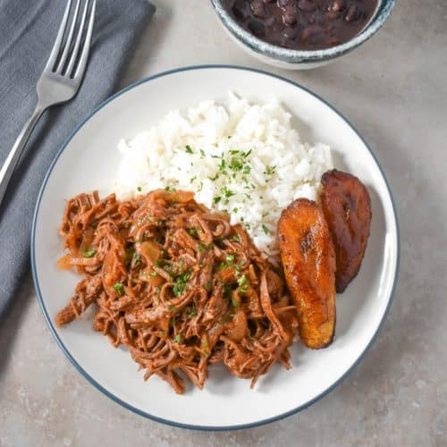

Ropa Vieja Recipe

Description
Ropa Vieja is a popular Cuban dish made with shredded beef in a flavorful tomato sauce.
In this recipe, the tomato sauce is made with onions, garlic, and spices sautéed in olive oil.
The beef is cooked in beef broth, shredded, and added to the tomato sauce.
Ingredients
Steps
- Arrange the flank steak in a large pot so that it’s not folded or overlapping.
- Add the beef broth. Bring to a boil, lower the heat and simmer for 15 minutes.
- Turn the steaks and cook (simmering) another 30-35 minutes, turning again about halfway through the cooking time.
- Remove the steak from the pot and let it cool. Use two forks to shred it into strings.
Home